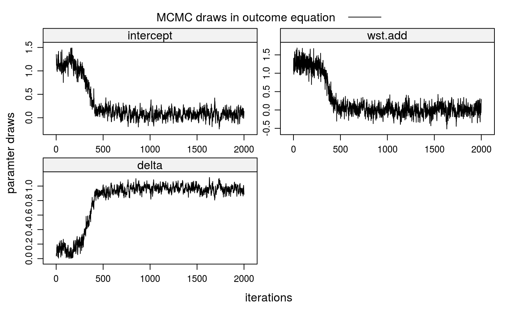
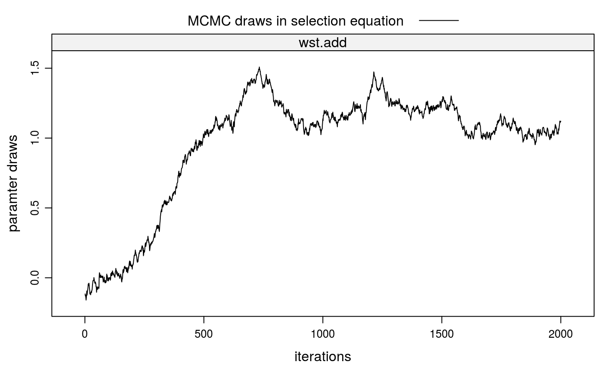

stabit.RdThe function provides a Gibbs sampler for a structural matching model that estimates preferences and corrects for sample selection bias when the selection process is a one-sided matching game; that is, group/coalition formation.
The input is individual-level data of all group members from one-sided matching marktes; that is, from group/coalition formation games.
In a first step, the function generates a model matrix with characteristics of all feasible groups of the same size as the observed groups in the market.
For example, in the stable roommates problem with \(n=4\) students \(\{1,2,3,4\}\) sorting into groups of 2, we have \( {4 \choose 2}=6 \) feasible groups: (1,2)(3,4) (1,3)(2,4) (1,4)(2,3).
In the group formation problem with \(n=6\) students \(\{1,2,3,4,5,6\}\) sorting into groups of 3, we have \( {6 \choose 3} =20\) feasible groups. For the same students sorting into groups of sizes 2 and 4, we have \( {6 \choose 2} + {6 \choose 4}=30\) feasible groups.
The structural model consists of a selection and an outcome equation. The Selection Equation
determines which matches are observed (\(D=1\)) and which are not (\(D=0\)).
$$ \begin{array}{lcl}
D &= & 1[V \in \Gamma] \\
V &= & W\alpha + \eta
\end{array}
$$
Here, \(V\) is a vector of latent valuations of all feasible matches, ie observed and
unobserved, and \(1[.]\) is the Iverson bracket.
A match is observed if its match valuation is in the set of valuations \(\Gamma\)
that satisfy the equilibrium condition (see Klein, 2015a). This condition differs for matching
games with transferable and non-transferable utility and can be specified using the method
argument.
The match valuation \(V\) is a linear function of \(W\), a matrix of characteristics for
all feasible groups, and \(\eta\), a vector of random errors. \(\alpha\) is a paramter
vector to be estimated.
The Outcome Equation determines the outcome for observed matches. The dependent
variable can either be continuous or binary, dependent on the value of the binary
argument. In the binary case, the dependent variable \(R\) is determined by a threshold
rule for the latent variable \(Y\).
$$ \begin{array}{lcl}
R &= & 1[Y > c] \\
Y &= & X\beta + \epsilon
\end{array}
$$
Here, \(Y\) is a linear function of \(X\), a matrix of characteristics for observed
matches, and \(\epsilon\), a vector of random errors. \(\beta\) is a paramter vector to
be estimated.
The structural model imposes a linear relationship between the error terms of both equations as \(\epsilon = \delta\eta + \xi\), where \(\xi\) is a vector of random errors and \(\delta\) is the covariance paramter to be estimated. If \(\delta\) were zero, the marginal distributions of \(\epsilon\) and \(\eta\) would be independent and the selection problem would vanish. That is, the observed outcomes would be a random sample from the population of interest.
stabit(x, m.id = "m.id", g.id = "g.id", R = "R", selection = NULL, outcome = NULL, simulation = "none", seed = 123, max.combs = Inf, method = "NTU", binary = FALSE, offsetOut = 0, offsetSel = 0, marketFE = FALSE, censored = 0, gPrior = FALSE, dropOnes = FALSE, interOut = 0, interSel = 0, standardize = 0, niter = 10, verbose = FALSE)
| x | data frame with individual-level characteristics of all group members including market- and group-identifiers. |
|---|---|
| m.id | character string giving the name of the market identifier variable. Defaults to |
| g.id | character string giving the name of the group identifier variable. Defaults to |
| R | dependent variable in outcome equation. Defaults to |
| selection | list containing variables and pertaining operators in the selection equation. The format is
|
| outcome | list containing variables and pertaining operators in the outcome equation. The format is
|
| simulation | should the values of dependent variables in selection and outcome equations be simulated? Options are |
| seed | integer setting the state for random number generation if |
| max.combs | integer (divisible by two) giving the maximum number of feasible groups to be used for generating group-level characteristics. |
| method | estimation method to be used. Either |
| binary | logical: if |
| offsetOut | vector of integers indicating the indices of columns in |
| offsetSel | vector of integers indicating the indices of columns in |
| marketFE | logical: if |
| censored | draws of the |
| gPrior | logical: if |
| dropOnes | logical: if |
| interOut | two-colum matrix indicating the indices of columns in |
| interSel | two-colum matrix indicating the indices of columns in |
| standardize | numeric: if |
| niter | number of iterations to use for the Gibbs sampler. |
| verbose | . |
Operators for variable transformations in selection and outcome arguments.
addsum over all group members and divide by group size.
intsum over all possible two-way interactions \(x*y\) of group members and divide by the number of those, given by choose(n,2).
ieqsum over all possible two-way equality assertions \(1[x=y]\) and divide by the number of those.
ivesum over all possible two-way interactions of vectors of variables of group members and divide by number of those.
inv...
dstsum over all possible two-way distances between players and divide by number of those, where distance is defined as \(e^{-|x-y|}\).
Klein, T. (2015a). Does Anti-Diversification Pay? A One-Sided Matching Model of Microcredit. Cambridge Working Papers in Economics, #1521.
Zellner, A. (1986). On assessing prior distributions and Bayesian regression analysis with g-prior distributions, volume 6, pages 233--243. North-Holland, Amsterdam.
## --- SIMULATED EXAMPLE --- ## 1. Simulate one-sided matching data for 200 markets (m=200) with 2 groups ## per market (gpm=2) and 5 individuals per group (ind=5). True parameters ## in selection equation is wst=1, in outcome equation wst=0. ## 1-a. Simulate individual-level, independent variables idata <- stabsim(m=200, ind=5, seed=123, gpm=2) head(idata)#> m.id g.id wst R #> 1 1 1 -0.56047565 NA #> 2 1 1 -0.23017749 NA #> 3 1 1 1.55870831 NA #> 4 1 1 0.07050839 NA #> 5 1 1 0.12928774 NA #> 6 1 2 1.71506499 NA## 1-b. Simulate group-level variables mdata <- stabit(x=idata, simulation="NTU", method="model.frame", selection = list(add="wst"), outcome = list(add="wst"), verbose=FALSE)#> Generating group-level data for 200 markets...head(mdata$OUT)#> m.id g.id intercept wst.add R xi epsilon #> 1 1 1 1 0.3698086 1.5670690 -0.8497043 1.5670690 #> 2 1 2 1 -0.2205573 -2.4953827 -1.1373036 -2.4953827 #> 3 2 1 1 0.7198747 1.3680982 -1.1198997 1.3680982 #> 4 2 2 1 -0.3026307 0.3707344 -0.7822018 0.3707344 #> 5 3 1 1 -0.3271234 3.0184259 -0.3719449 3.0184259 #> 6 3 2 1 -0.5219943 -0.1015002 -0.6527744 -0.1015002head(mdata$SEL)#> m.id g.id reg.id wst.add D V eta #> 1 1 1 2 0.3698086 1 2.7865819 2.41677335 #> 2 1 2 1 -0.2205573 1 -1.5786364 -1.35807906 #> 3 1 3 128 0.1935703 0 -0.1503470 -0.34391723 #> 4 1 4 129 0.2221432 0 1.8206520 1.59850877 #> 5 1 5 130 0.3377849 0 0.2492198 -0.08856511 #> 6 1 6 131 0.3860231 0 1.4668226 1.08079950## 2. Bias from sorting ## 2-a. Naive OLS estimation lm(R ~ wst.add, data=mdata$OUT)$coefficients#> (Intercept) wst.add #> 1.321692 1.281722## 2-b. epsilon is correlated with independent variables with(mdata$OUT, cor(epsilon, wst.add))#> [1] 0.3650137## 2-c. but xi is uncorrelated with independent variables with(mdata$OUT, cor(xi, wst.add))#> [1] 0.001335074## 3. Correction of sorting bias when valuations V are observed ## 3-a. 1st stage: obtain fitted value for eta lm.sel <- lm(V ~ -1 + wst.add, data=mdata$SEL) lm.sel$coefficients#> wst.add #> 1.006372eta <- lm.sel$resid[mdata$SEL$D==1] ## 3-b. 2nd stage: control for eta lm(R ~ wst.add + eta, data=mdata$OUT)$coefficients#> (Intercept) wst.add eta #> 0.09072970 0.09468869 0.94626877## 4. Run Gibbs sampler fit1 <- stabit(x=idata, method="NTU", simulation="NTU", censored=1, selection = list(add="wst"), outcome = list(add="wst"), niter=2000, verbose=FALSE)#> Generating group-level data for 200 markets... #> Drawing 2000 MCMC samples...## 5. Coefficient table summary(fit1)#> #> Coefficients for multi-index sample selection model. #> Method: Klein (2015), one-sided matching market #> #> Call: #> stabit(x = idata, selection = list(add = "wst"), outcome = list(add = "wst"), #> simulation = "NTU", method = "NTU", censored = 1, niter = 2000, #> verbose = FALSE) #> #> Selection equation: #> Estimate StdErr t.value p.value #> wst.add 1.15188 0.41565 2.7713 0.005846 ** #> #> Outcome equation: #> Estimate StdErr t.value p.value #> intercept 0.0733179 0.3871956 0.1894 0.84991 #> wst.add -0.0083934 0.4812529 -0.0174 0.98609 #> delta 0.9632351 0.2999799 3.2110 0.00143 ** #> --- #> Signif. codes: 0 '***' 0.001 '**' 0.01 '*' 0.05 '.' 0.1 ' ' 1## 6. Plot MCMC draws for coefficients plot(fit1)## --- REPLICATION, Klein (2015a) ---# NOT RUN { ## 1. Load data data(baac00); head(baac00) ## 2. Run Gibbs sampler klein15a <- stabit(x=baac00, selection = list(inv="pi",ieq="wst"), outcome = list(add="pi",inv="pi",ieq="wst", add=c("loan_size","loan_size2","lngroup_agei")), offsetOut=1, method="NTU", binary=TRUE, gPrior=TRUE, marketFE=TRUE, niter=800000) ## 3. Marginal effects summary(klein15a, mfx=TRUE) ## 4. Plot MCMC draws for coefficients plot(klein15a) # }